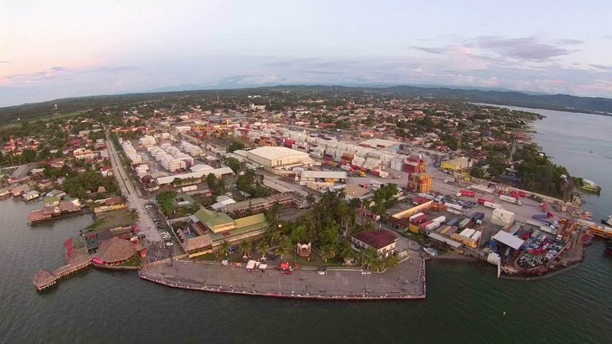

Departamento de Izabal
Puerto Barrios
departamento en Guatemala conocido por su belleza natural y riqueza cultural. Incluye el lago de Izabal, el río Dulce, y la bahía de Amatique, ofreciendo paisajes caribeños y oportunidades para actividades acuáticas. También es hogar de comunidades garífunas y mayas, con una vibrante cultura y tradiciones como el baile del pororó.
Cultura Garífuna: La cultura garífuna es una parte importante de Izabal, con música, baile y tradiciones vivas. Pororó: Un baile tradicional garífuna que celebra la devoción a la Virgen. Comunidades mayas: Izabal también alberga comunidades mayas. Gastronomía: La comida de Izabal incluye platos típicos como el tapado, un guiso de mariscos, y el caldo de pescado.
Ubicación:
Se encuentra en la costa caribeña de Guatemala, con Puerto Barrios como su cabecera departamental.
Conoce estos lugares que te recomendamos visitar si viajas a Izabal:
El Boquerón
El Boquerón es un lugar místico en donde se unen las cuevas con el agua creando una experiencia inolvidable. Podrás realizar recorrido en cayuco por el Río Sauce en donde podrás ir observando las laderas de piedra, fauna y mucha flora, ubicado en El Estor, Izabal.
Siete Altares
Siete Altares es un lindo lugar es conocido por las pozas naturales que forman hermosas caídas en las cuales puedes bañarte y apreciar el espectáculo natural. Este es un parque ecológico que conserva la belleza natural, ubicado en Livingston, Guatemala.

Castillo de San Felipe
Este castillo cuenta con una historia increíble. En la antigüedad las bodegas alrededor del Castillo de San Felipe, ubicado en Izabal, funcionaron como un centro de intercambio comercial entre España y Guatemala, ubicado en el Lago de Izabal, Río Dulce, Guatemala
Parque Nacional Quiriguá
El parque nacional Quiriguá Lo interesante de este lugar es toda la historia que representa, en la antigüedad en este lugar vivían los mayas y se pueden apreciar los principales lugares en donde ellos habitaron, ubicado en el Quiriguá, Izabal, Guatemala.
Sendero las escobas
Este lindo lugar cuenta con dos senderos los cuales son las cascadas y el paseo por el bosque tropical. Ambos se unen en un circuito que te permiten observar una naturaleza inigualable y conforme vas caminando podrás apreciar bosques tropicales abundantes, se encuentra ubicado en Puerto Barrios, Izabal.
❮ ❯